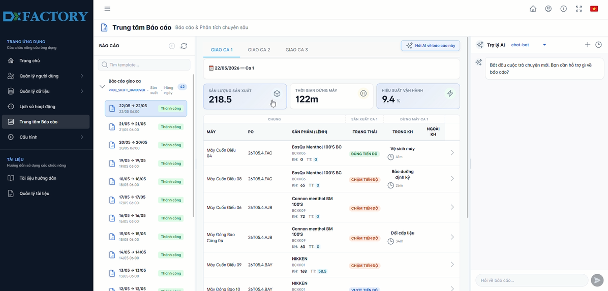
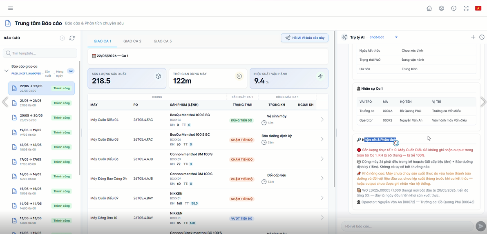
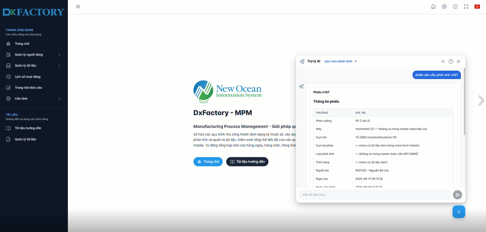
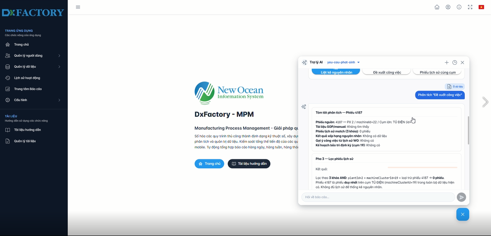

Dựng video chuyên nghiệp
bằng HTML & AI Agent
HyperFrames biến một thư mục screenshot, slide hoặc một đoạn brief thành video 60 giây có voiceover, nhạc nền và chuyển cảnh điện ảnh — toàn bộ do AI agent dựng từ HTML, render thành MP4. Hướng dẫn này đi từ cài đặt → chuẩn bị đầu vào → cách prompt, lấy chính video DxFactory × AI Agent làm ví dụ.
Một video = một file HTML + một timeline
Thay vì kéo-thả trong phần mềm dựng phim, bạn (hoặc AI agent) viết một file index.html: bố cục bằng CSS, hoạt hình bằng GSAP timeline, timing bằng các thuộc tính data-*. Framework lo phần hiện/ẩn cảnh, phát media và đồng bộ timeline, rồi render ra MP4 chuẩn.
HTML/CSS/GSAP
Mỗi cảnh là một khối HTML. Chuyển động dùng GSAP, kiểu dáng dùng CSS — không cần học công cụ mới nếu bạn biết web.
AI Agent dựng hộ
Bạn ra brief bằng ngôn ngữ tự nhiên trong Claude Code. Bộ skills của HyperFrames hướng dẫn agent dựng đúng chuẩn framework.
Render = MP4
Một lệnh render chạy headless Chrome, chụp từng frame và đóng gói thành MP4/WebM — có cả voiceover, nhạc nền, phụ đề.
Repo này có gì
| Thư mục | Vai trò |
|---|---|
.agents/skills/ & agent/skills/ | Bộ skills hướng dẫn AI agent: hyperframes (điều phối), product-launch-video, faceless-explainer, website-to-video, hyperframes-media (TTS/nhạc/phụ đề)… |
Projects/ | Các project video. Mỗi project là một thư mục độc lập có index.html, assets/, renders/. |
Projects/DxFac_AI_Agent_Video/ | Video ví dụ trong tài liệu này — đã dựng hoàn chỉnh và render ra MP4. |
Projects/DxFac_with_AI_Agent/ | File đầu vào thô của ví dụ: 2 file PowerPoint use-case + các ảnh chụp màn hình UC1.*, UC2.*. |
skills-lock.json | Khóa phiên bản các skill đã cài (giống lockfile của npm). |
💡 Ý tưởng cốt lõi
Bạn không phải tự viết HTML. Bạn chuẩn bị nguyên liệu (ảnh, slide, đường link thương hiệu), rồi mô tả video mong muốn cho AI agent. Agent đọc skills, dựng HTML, kiểm tra (lint) và render. Tài liệu này dạy bạn cách chuẩn bị nguyên liệu và cách ra brief sao cho ra video đẹp ngay từ lần đầu.
Yêu cầu & cài đặt
HyperFrames chạy qua CLI npx hyperframes. Dưới đây là tất cả những thứ cần có.
| Thành phần | Bắt buộc? | Ghi chú |
|---|---|---|
| Node.js ≥ 22 | Bắt buộc | Khuyến nghị bản LTS mới nhất (ví dụ đã test trên v24). Cài tại nodejs.org. |
| FFmpeg | Bắt buộc | Dùng để đóng gói video/âm thanh. Windows: winget install Gyan.FFmpeg hoặc tải tại ffmpeg.org. |
| Chrome (headless) | Bắt buộc | HyperFrames tải kèm Chrome riêng. Quản lý bằng npx hyperframes browser. |
| Claude Code (AI agent) | Bắt buộc | Nơi bạn ra brief. Skills của HyperFrames được agent đọc để dựng đúng chuẩn. |
| HeyGen API key | Tùy chọn | Bật giọng đọc (TTS) & nhạc nền chất lượng cao từ thư viện HeyGen. Không có key vẫn chạy được: TTS dùng Kokoro local, nhạc nền tự sinh local. |
Bước cài đặt
Kiểm tra môi trường
Mở terminal trong thư mục repo và xác nhận Node ≥ 22:
node --version # cần >= v22
npx hyperframes doctor # kiểm tra Chrome, FFmpeg, Node, RAMCài bộ skills của HyperFrames
Repo này đã có sẵn skills trong .agents/skills/. Nếu cần cài mới hoặc cập nhật, chạy lệnh dưới rồi khởi động lại phiên agent để skill được nạp:
npx skills add heygen-com/hyperframes(Tùy chọn) Khai báo HeyGen API key cho giọng đọc & nhạc
Đặt biến môi trường HEYGEN_API_KEY. Không có key thì bỏ qua bước này — hệ thống tự fallback sang giọng/nhạc chạy local.
# PowerShell — phiên hiện tại
$env:HEYGEN_API_KEY = "hg_xxx..."
# hoặc lưu vĩnh viễn:
setx HEYGEN_API_KEY "hg_xxx..."Tạo project mới (khi bắt đầu video mới)
Mỗi video sống trong một thư mục riêng. Lệnh init tạo đúng cấu trúc, copy media và cài skills:
npx hyperframes init Projects/Ten-Video-Cua-Ban
# hoặc chọn template có sẵn:
npx hyperframes init Projects/Promo --example product-promoTemplate có sẵn: blank, warm-grain, swiss-grid, kinetic-type, product-promo, nyt-graph…
⚠ Lưu ý quan trọng
npm run dev (preview server) là tiến trình chạy nền lâu dài — đừng chạy ở foreground sẽ bị timeout. Trong Claude Code agent luôn chạy nó ở chế độ background. Sau mỗi lần sửa HTML phải chạy npm run check để lint trước khi render.
Cách chuẩn bị file đầu vào
Video đẹp bắt đầu từ nguyên liệu tốt. Bạn không cần nhiều — nhưng càng rõ ràng, agent càng dựng đúng. Đây là chính xác những gì đã dùng cho ví dụ DxFactory.
Ảnh chụp màn hình sản phẩm
Là "ngôi sao" của mỗi cảnh. Chụp gọn, độ phân giải cao (ưu tiên ≥ 1600px ngang). Đặt tên có ý nghĩa.
- Ví dụ:
UC1.1.png…UC2.4.png - Mỗi use case nên có 2–4 ảnh: "hỏi AI", "báo cáo", "drill-down", "kết quả".
Slide / tài liệu nguồn
Cung cấp nội dung & số liệu để agent viết kịch bản chính xác.
- Ví dụ: 2 file
.pptxmô tả từng use case. - Trích các con số quan trọng: tiết kiệm 60–70h/tháng, OEE +1–3%, MTTR −50%.
Thương hiệu (brand)
Một đường link website hoặc file DESIGN.md mô tả màu sắc, font, tông giọng.
- Ví dụ:
https://dxfac.com+DESIGN.md"Data Drift". - Agent dùng để chọn đúng palette: cyan #22d3ee, violet #a78bfa, nền space-black #05070d.
Brief / nội dung
Một đoạn mô tả: ai xem, dài bao lâu, ngôn ngữ, tông cảm xúc, thông điệp chính.
- Ví dụ: "60 giây, tiếng Việt, futuristic, 2 use case AI Agent cho sản xuất."
DESIGN.md — bản "cheat sheet" thương hiệu
Nếu project có file DESIGN.md (hoặc design.md), agent đọc nó trước tiên và coi đó là chân lý về màu/font/quy tắc. Đây là một phần file thật của ví dụ DxFactory:
---
name: DxFactory × AI Agent — Use Cases (Futuristic)
source: https://dxfac.com/
mood: futuristic, immersive, high-energy tech
format: 1920x1080 landscape, 60s
language: Vietnamese (with EN terms: AI Agent, OEE, MTTR, RCA)
---
## Colors
bg-deep #05070d # nền space-black
ink #eaf2ff # chữ chính
cyan #22d3ee # accent chính (glow)
violet #a78bfa # accent phụ
# Gradient: linear-gradient(100deg, #22d3ee, #a78bfa)
## Typography
Headline: Inter 200–700 · Codes/metrics: JetBrains Mono 700📁 Sắp xếp thư mục đầu vào
Cách đơn giản nhất: tạo một thư mục, bỏ tất cả nguyên liệu thô vào (giống Projects/DxFac_with_AI_Agent/ chứa PPTX + ảnh UC1.*, UC2.*). Sau đó chỉ cho agent đường dẫn thư mục đó trong prompt. Agent sẽ tự crop/đổi tên ảnh và đưa vào assets/shots/ của project video.
Cách prompt để build ra video
Bạn gõ yêu cầu trong Claude Code. Skill /hyperframes đóng vai "tổng đài" — đọc ý định của bạn rồi định tuyến tới đúng workflow. Bí quyết: nêu rõ nguồn, độ dài, ngôn ngữ, tông, và nguyên liệu.
Định tuyến workflow — gõ gì để ra cái gì
| Bạn có | Skill / lệnh | Ra |
|---|---|---|
| URL/brief sản phẩm | /product-launch-video | Video ra mắt / quảng bá 60–90s |
| Một website bất kỳ | /website-to-video | Video tour/showcase của site |
| Một chủ đề/bài viết (không URL) | /faceless-explainer | Video giải thích 60–90s |
| Video người nói có sẵn (MP4) | /embedded-captions | Cùng video + phụ đề |
| Một Pull Request GitHub | /pr-to-video | Video giải thích thay đổi code |
| Motion graphic ngắn (<10s) | /motion-graphics | Title/animation/đồ họa số liệu |
| Trường hợp khác | /general-video | Video tùy biến bất kỳ độ dài |
Không chắc chọn cái nào? Cứ gõ /hyperframes hoặc mô tả tự nhiên — agent sẽ tự định tuyến.
Prompt mẫu — đúng cái đã dựng ra video DxFactory
Dùng /product-launch-video. Làm video 60 giây phong cách futuristic, immersive, high-energy giới thiệu 2 use case AI Agent của nền tảng DxFactory (New Ocean Group), định dạng 1920×1080, tiếng Việt (giữ thuật ngữ EN: AI Agent, OEE, MTTR, RCA, drill-down).
Brand lấy từ https://dxfac.com, theo phong cách "Data Drift": nền space-black, chữ mảnh, hạt particle, glow cyan/violet.
Nguyên liệu trong Projects/DxFac_with_AI_Agent/: ảnh UC1.* cho Operations Intelligence (hỏi dữ liệu nhà máy bằng ngôn ngữ tự nhiên, báo cáo tự động & drill-down); ảnh UC2.* cho AI Maintenance Assistant — CMMS RCA (phân tích nguyên nhân gốc, học liên tục).
Cần voiceover tiếng Việt + nhạc nền điện tử driving. Nhấn các số liệu: tiết kiệm 60–70h/tháng, ra quyết định <15 phút, giảm 20% dừng máy, OEE +1–3%, MTTR −50%, tri thức 25 năm số hóa. Kết bằng CTA: dxfac.com.
Một prompt tốt nên trả lời 6 câu hỏi
🎯 Ai xem & ở đâu
Khách hàng doanh nghiệp? Nội bộ? Mạng xã hội? → quyết định độ dài & tông.
⏱️ Độ dài & tỉ lệ
60s ngang 1920×1080, hay 1080×1920 dọc cho social.
🗣️ Ngôn ngữ & giọng
Tiếng Việt? Có voiceover không? Giọng nam/nữ?
🎨 Tông & thương hiệu
Futuristic, tối giản, ấm áp…? Link brand hoặc DESIGN.md.
📦 Nguyên liệu
Đường dẫn thư mục ảnh/slide, ảnh nào cho cảnh nào.
📊 Thông điệp & số liệu
3–5 con số/ý chính cần nhấn. CTA cuối video.
Prompt chỉnh sửa nhanh (sau khi đã có bản nháp)
Cảnh 5 đổi số "60–70h" thành "70–80h" và làm chữ số to hơn. Cảnh title kéo dài thêm 0.5s. Render lại bản high quality ra renders/final.mp4.
Dùng /faceless-explainer. Làm video 75s tiếng Việt giải thích "AI Agent giúp gì cho bảo trì nhà máy", tông chuyên nghiệp - dễ hiểu, có voiceover nữ + phụ đề, đồ họa số liệu minh họa. Không cần screenshot.
Ví dụ: DxFactory × AI Agent — 60 giây
Đây là kết quả render thật từ project Projects/DxFac_AI_Agent_Video/. Bấm play để xem, rồi cuộn xuống để thấy từng cảnh được dựng ra sao.
Nếu video không hiện, hãy mở file HTML này bằng trình duyệt ngay trong thư mục repo (đường dẫn tương đối tới Projects/DxFac_AI_Agent_Video/renders/). Bản không voiceover: DxFac_AI_Agent_60s.mp4.
Cấu trúc project tạo ra video này
| File / thư mục | Nội dung |
|---|---|
DESIGN.md | Cheat sheet thương hiệu — màu, font, motion, do's & don'ts. |
index.html | Toàn bộ video: 10 cảnh, GSAP timeline 60s, nền particle, 11 track âm thanh. |
assets/shots/ | 7 ảnh screenshot sản phẩm (uc1-report, uc1-analysis, uc2-ask, uc2-rca…). |
assets/voice/ | 10 file s1.wav…s10.wav — voiceover tiếng Việt (giọng vi-VN-HoaiMy), mỗi cảnh một câu. |
assets/bgm/track.wav | Nhạc nền điện tử 124 BPM, tự sinh deterministic bằng scripts/make-music.mjs. |
package.json | Các lệnh: dev, check, render, publish, music. |
Các screenshot trở thành "ngôi sao" mỗi cảnh

Hỏi dữ liệu nhà máy bằng ngôn ngữ tự nhiên, trả lời tức thì.

Báo cáo giao ca tự động & drill-down truy ngược nguyên nhân.

Máy hỏng? Hỏi AI 24/7 — tra cứu lịch sử + SOP tức thì.

Từ triệu chứng đến nguyên nhân gốc, học liên tục mỗi phiếu sửa.
Dòng thời gian 60 giây — từng cảnh một
① Title
DxFACTORY × AI AGENT hiện dần, badge "2 USE CASES". VO: giới thiệu trợ lý AI cho vận hành sản xuất.
② Divider UC-01
"Operations Intelligence" — tự động hóa báo cáo & drill-down.
③ Hỏi dữ liệu
Screenshot uc1-report.png trôi vào với glow viền, bubble ví dụ: "Vì sao Line A chậm tiến độ hôm nay?"
④ Báo cáo tự động
uc1-analysis.png + 3 highlight: báo cáo tự động, drill-down nguyên nhân, 3 góc nhìn vận hành.
⑤ Số liệu UC-01
4 thẻ đếm: 60–70h tiết kiệm/tháng · <15′ ra quyết định · ↓20% dừng máy · +1–3% OEE.
⑥ Divider UC-02
"AI Maintenance Assistant" — phân tích nguyên nhân gốc (RCA), sẵn sàng 24/7.
⑦ Hỏi AI 24/7
uc2-ask.png + bubble triệu chứng: "Máy rung & có tiếng ồn bất thường."
⑧ Nguyên nhân gốc
uc2-rca.png: chẩn đoán trong vài giây ("Mòn vòng bi"), học liên tục, tri thức 25 năm số hóa.
⑨ Số liệu UC-02
3 thẻ: ↓50% MTTR · 24/7 luôn trực · 25 năm tri thức chuyên gia.
⑩ Outro / CTA
"Nhà máy thông minh — vận hành cùng AI Agent" + dxfac.com · fade to black.
Bên trong index.html — timing & chuyển động
Mỗi track âm thanh và mỗi cảnh đều khai báo timing bằng data-*. Chuyển cảnh dùng "blur crossfade" — không bao giờ cắt cứng:
<!-- voiceover: 1 clip / cảnh, track 1, lồng trên nhạc nền -->
<audio id="vo1" data-start="0.5" data-duration="4.45"
data-track-index="1" src="assets/voice/s1.wav"></audio>
// chuyển cảnh: blur crossfade 0.4s (power2.inOut)
function blurCross(oldSel, newSel, T) {
tl.to(oldSel, { opacity: 0, filter: "blur(6px)", scale: 1.03, duration: 0.4 }, T);
tl.fromTo(newSel, { opacity: 0, filter: "blur(6px)", scale: 0.97 },
{ opacity: 1, filter: "blur(0px)", scale: 1, duration: 0.46 }, T);
}
blurCross("#s1", "#s2", 5.6); // title → divider UC-01Nhạc nền được tạo thế nào
Ví dụ này tự tổng hợp nhạc bằng scripts/make-music.mjs (Node thuần, deterministic) — 124 BPM, vòng hợp âm Am–F–C–G, có riser + impact rơi đúng 2 mốc reveal use-case (6s, 30s) và finale (58s). Bạn cũng có thể để agent lấy nhạc từ thư viện HeyGen nếu có API key.
npm run music # node scripts/make-music.mjs → assets/bgm/track.wavQuy trình từ brief → MP4
Khi bạn ra brief, agent chạy theo các bước sau (workflow /product-launch-video). Bạn chỉ cần duyệt ở vài điểm gate.
Setup & brief
Chốt góc nhìn, độ dài, tỉ lệ, ngôn ngữ. Tạo project với hyperframes init.
Capture nguyên liệu
Crawl website (hyperframes capture) để lấy màu/font/ảnh, hoặc nhận thư mục ảnh/slide bạn đưa.
Design system
Đọc DESIGN.md (hoặc chọn preset) → chốt palette & font cho toàn video.
Storyboard & script bạn duyệt
Agent dựng kịch bản từng cảnh + lời thoại, trình bạn duyệt trước khi đi tiếp.
Audio
Sinh voiceover (TTS), lấy mốc thời gian từng từ, tạo/lấy nhạc nền + SFX.
Dựng từng cảnh (frames)
Mỗi cảnh thành một khối HTML, ghép vào index.html, thêm chuyển cảnh.
Kiểm tra & render bạn duyệt
Lint → validate → inspect → preview cho bạn xem → render MP4 chất lượng cao.
Bảng lệnh thường dùng
npm run dev # preview server (chạy nền, hot-reload)
npm run check # lint + validate + inspect — LUÔN chạy sau khi sửa
npm run render # render ra MP4
npm run publish # publish & lấy link chia sẻ
# hoặc gọi trực tiếp CLI:
npx hyperframes render --quality high --output renders/final.mp4
npx hyperframes render --quality draft # nhanh, để xem thử
npx hyperframes render --fps 60 --quality high # bản giao cuối
npx hyperframes inspect --at 1.5,4,7.25 # soi layout ở các mốc✅ Checklist trước khi render bản cuối
lint&validatesạch (không lỗi).inspectkhông báo chữ tràn khung / ra ngoài canvas.- Cảnh hợp
DESIGN.md: chỉ dùng màu trong palette, đúng font. - Mọi cảnh có chuyển cảnh (không cắt cứng); chỉ cảnh cuối được fade out.
Ý tưởng dùng HyperFrames hằng ngày
Sức mạnh thật sự: biến tài liệu/screenshot bạn đã có thành video chuyên nghiệp trong vài chục phút, không cần đội dựng phim. Dưới đây là gợi ý theo từng vai trò.
Cho Sales
Chốt deal nhanh hơn bằng video thay vì PDF dài.
- Demo cá nhân hóa: video 60s cho từng khách hàng, lồng đúng tên/ngành/số liệu của họ.
- Theo dõi sau gặp: gửi clip tóm tắt giải pháp ngay sau cuộc họp.
- Pitch sản phẩm: như chính ví dụ DxFactory — 2 use case + ROI.
- So sánh gói/giá: motion graphic số liệu, đếm tăng dần.
- Social/LinkedIn: bản dọc 1080×1920 cho mỗi tính năng mới.
Cho BA (Business Analyst)
Truyền đạt yêu cầu & quy trình rõ ràng, ai cũng hiểu.
- Walkthrough use case: biến tài liệu đặc tả + wireframe thành video luồng nghiệp vụ.
- Before/After: minh họa quy trình cũ vs mới, nhấn điểm cải tiến.
- Giải thích số liệu/KPI: dashboard tĩnh → đồ họa động dễ tiêu hóa.
- Tài liệu nghiệm thu (UAT): clip hướng dẫn từng bước thao tác.
- Trình stakeholder: tóm tắt phân tích thành 90s thay vì slide 30 trang.
Cho PM dự án
Cập nhật & báo cáo tiến độ một cách cuốn hút.
- Sprint/Release recap: video 60s tổng kết tính năng mới mỗi đợt.
- Demo nội bộ: screenshot build mới → clip giới thiệu cho team/lãnh đạo.
- Kickoff dự án: tầm nhìn, mục tiêu, lộ trình thành video mở màn.
- Onboarding: hướng dẫn quy trình/công cụ cho thành viên mới.
- Status report: biến số liệu tiến độ thành đồ họa động hằng tuần.
Mẫu lặp lại được (template hóa)
Vì video là HTML, bạn có thể khai báo biến (data-composition-variables) rồi render hàng loạt với nội dung khác nhau — không sửa source. Hoàn hảo cho Sales gửi mỗi khách một bản, hoặc PM ra recap mỗi sprint:
# cùng 1 video, đổi tên khách & số liệu cho mỗi bản
npx hyperframes render --variables '{"khachHang":"Công ty A","tietKiem":"80h"}' --output renders/congtyA.mp4
npx hyperframes render --variables '{"khachHang":"Công ty B","tietKiem":"65h"}' --output renders/congtyB.mp4🚀 Bắt đầu nhanh nhất
Gom screenshot + vài con số vào một thư mục, mở Claude Code trong repo này, rồi gõ: "Dùng /product-launch-video, làm video 60s tiếng Việt giới thiệu [sản phẩm], dùng ảnh trong [thư mục], nhấn các số [...], có voiceover + nhạc nền." Phần còn lại để agent lo.